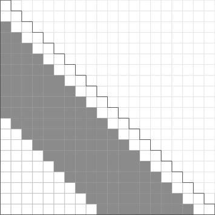

IOICamp 2016
一種解決問題的「模式」，
用來解決「最佳化問題」和「計數問題」
假設我們有一個總容量為 $V$ 單位的背包 ($V \leq 5,000$)，可以用來放各種物品，且只要物品的總容量不要超過 $V$ ，就保證可以放得進此背包。
現在總共有 $N$ ($N \leq 1,000$) 個物品，每個物品 $I_i$ 有其佔的體積 $d_i$ 及價值 $c_i$ ($0 \leq d_i, c_i \leq 1,000$)，每項物品都只有一個，問最多可以放價值總和多少的物品在這個背包內？
原先的問題：$V\, + \,(\Gamma = \{I_1, I_2, \ldots, I_N\})$
拿了$I_k$後
剩餘的問題：$V - d_k\, + \,(\Gamma' = \{I_1, I_2, \ldots, I_N\} \setminus {I_k})$
$K(V, \Gamma) = \max \Big( K(V-d_k,\Gamma') + c_k , K(V,\Gamma') \Big)$
給定一張有向無環圖(Directed Acyclic Graph, DAG)其中有 $N$ 個節點， $M$ 條有向邊，每條邊又有其邊權。 其中有一個可以走到所有點的源點 $S$ ，請問：對於每一個點 $T$ ，從 $S$ 出發走到 $T$ 的最長距離是多少？
給定一個寬度固定為 $L$ 的多層書櫃，以及 $N \leq 100000$ 本書，其中編號 $i$ 的書本的寬度及高度分別為 $W(i)$ 和 $H(i)$ 。 現在要將這 $N$ 本書依序擺進書櫃中，而且須滿足下列條件：
而每一層的高度為那一層當中高度最大的書本的高度。請問：這個書櫃的總高度最少多少？
$dp[i]$：前 $i$ 本書所需最小高度
$dp[ i ] = \displaystyle\min_{ \substack{ 1 \leq j + 1 \leq i \\ \sum_{n=j+1}^{i} W(n) \leq L }} \Big( dp[ j ] + \displaystyle\max_{j+1 \leq n \leq i} H(n) \Big)$
$dp[0]=0$
int n , L ;
int H[ MAXLEN + 5 ] , W[ MAXLEN + 5 ] ;
int dp[ MAXLEN + 5 ] ;
int solve() {
dp[ 0 ] = 0 ;
for ( int i = 1 ; i <= n ; i ++ ) {
dp[ i ] = INF ; // INF: any value large enough
for ( int j = 0 ; j < i ; j ++ ) {
int widsum = 0 , maxhgt = 0 ;
for ( int k = j + 1 ; k <= i ; k ++ )
widsum += W[ k ] , maxhgt = max( maxhgt , H[ k ] ) ;
if ( widsum > L ) continue ;
else dp[ i ] = min( dp[ i ] , dp[ j ] + maxhgt ) ;
}
}
return dp[ n ] ;
}
int n , m ; // n nodes, m edges
struct edge { int from , weight ; } ; // edge structure
vector< edge > v[ MAXN + 1 ] ;
// v[ i ] stores all edges that points to node i
void solve( int idx ) {
if ( dp[ idx ] != -1 ) return dp[ idx ] ;
for ( edge ed : v[ idx ] )
dp[ idx ] = max( dp[ idx ] , solve( ed.from ) + ed.weight ) ;
return dp[ idx ] ;
}
fill( dp + 1 , dp + n + 1 , -1 ) ;
dp[ 1 ] = 0 ;
for ( int i = 1 ; i <= n ; i ++ ) if ( dp[ i ] == -1 )
solve( i ) ;
直觀、減低編程複雜度、狀態複雜時完勝
遞迴實作、stack overflow、效率較差
dp[ 1 ] = 0 ;
for ( int i = 1 ; i <= n ; i ++ ) {
int idx = tp[ i ] ;
dp[ idx ] = -1 ;
for ( edge ed : v[ idx ] )
dp[ idx ] = max( dp[ idx ] , solve( ed.from ) + ed.weight ) ;
}
效率較佳、程式碼較短
需有拓樸序、狀態複雜時難以實作
$dp[i]$：前 $i$ 本書所需最小高度
$dp[ i ] = \displaystyle\min_{ \substack{ 1 \leq j + 1 \leq i \\ \sum_{n=j+1}^{i} W(n) \leq L }} \Big( dp[ j ] + \displaystyle\max_{j+1 \leq n \leq i} H(n) \Big)$
$\sum_{n=j+1}^{i} W(n)$ 和 $\displaystyle\max_{j+1 \leq n \leq i} H(n)$ 花了 $O(N^3)$
其實他們之間也有相依關係
$$\sum_{n=j+1}^{i} W(n) = \sum_{n=j+1}^{i-1} W(n) + W(i)$$
$$\displaystyle\max_{j+1 \leq n \leq i} H(n) = \max \Big\{ \displaystyle\max_{j+1 \leq n \leq i-1} H(n) , \,H(i) \Big\}$$
給一個長度 $N \leq 500000$ 的0/1序列，和一個比例 $f$ ($0\leq f \leq 1$)。請給出一個子區間所形成的序列，使得當中的 $1$ 所佔的比例越接近 $f$ 越好。
省空間以及提升執行效率的小技巧
在多維度的動態規劃問題中，
某一個維度上的轉移只跟它之前的特定幾項有關係時
給定兩個序列 $\mathcal{A} = (a_1, \ldots , a_n)$ 及 $\mathcal{B} = (b_1, \ldots , b_m)$，問最長的共同子序列 (在 $\mathcal{A}$ 和 $\mathcal{B}$ 中都有出現的子序列) 為何。請輸出該最長共同子序列 (LCS) 的長度。
$dp[i][j]$：$(a_1, \ldots , a_i)$ 和 $(b_1, \ldots , b_j)$ 的 LCS 長度
$dp[ i ][ j ] = \begin{cases} dp[ i - 1 ][ j - 1 ] + 1 & \text{if } a_i = b_j \\ \displaystyle\max \big\{ dp[ i - 1 ][ j ] , dp[ i ][ j - 1 ] \big\} & \text{otherwise} \end{cases}$
捨棄先前的資訊，無法輸出解答...
給定一個長度 $N$ ($1 \leq N \leq 10^6$) 的數列 $A = (a_1, a_2, \ldots , a_N)$ ，求所有長度介於 $[l,r]$ ($1 \leq l \leq r \leq N$) 之間的區間總和中的最大值。
$dp[i]$：以第 $i$ 項結尾的區間和最大值
$dp[ i ] = \displaystyle\max_{ \substack{ 1 \leq j \leq i \\ l \leq i-j+1 \leq r }} \Big( p[ i ] - p[ j - 1 ] \Big) = p[ i ] - \displaystyle\min_{ \substack{ 1 \leq j \leq i \\ l \leq i-j+1 \leq r }} p[ j - 1 ]$
$N=20$, $l=3$, $r=11$
int n , l , r ;
int p[ MAXN + 5 ] ; // preprocessed prefix-sum
int dp[ MAXN + 5 ] ;
int ans ; // stores the final answer
typedef pair< int , int > ii ;
deque< ii > dq ;
if ( l == 1 ) dq.emplace_back( 0 , 0 ) ;
for ( int i = 1 ; i <= n ; i ++ ) {
while ( dq.size() && i - dq.front().second >= r )
dq.pop_front() ;
if ( dq.size() ) dp[ i ] = p[ i ] - dq.front().first ;
else dp[ i ] = -1 ; // no valid interval
if ( i - l + 1 >= 0 ) {
while ( dq.size() && dq.back().first >= p[ i - l + 1 ] )
dq.pop_back() ;
dq.emplace_back( p[ i - l + 1 ] , i - l + 2 ) ;
}
if ( dp[ i ] != -1 ) ans = max( ans , dp[ i ] ) ;
}
凹單調(concave totally monotone)：
$$a\leq b \Rightarrow c\leq d$$
凸單調(convex totally monotone)：
$$a\geq b \Rightarrow c\geq d$$
給一個$m \times n$ 矩陣 $B$，若 $\forall 1\leq i \le m, 1\leq j \le n$我們有：
$$B[i][j]+B[i+1][j+1] \;\;\leq (\geq)\;\; B[i][j+1]+B[i+1][j]$$
那我們說他符合 convex (concave) Monge condition.
給一個長度 $N$ ($N\leq 10^6$) 的數列 $\mathcal{A} = (a_1, a_2, \ldots , a_N )$ , $1\leq a_i \leq 100$ ， 現在要把這個數列切成任意多個連續的數列。對於每一個切出的數列，假設其總和為 $x$ ，便會得到 $a\cdot x^2 + b\cdot x + c$ ($-5 \leq a \leq -1 ,\, \lvert b \rvert, \lvert c \rvert \leq 10^7 $) 分。問最多可以得到幾分？
$dp[i]$：數列中前 $i$ 項最多可以得到的分數
$dp[i] = \displaystyle\max_{0 \leq j \le i} \Big\{ dp[ j ] + a \cdot ( \displaystyle\sum_{k=j+1}^{i}a[k] )^2 + b \cdot ( \displaystyle\sum_{k=j+1}^{i}a[k] ) + c \Big\}$
$\begin{aligned} dp[ i ] &= \displaystyle\max_{0 \leq j \le i} \Big\{ dp[ j ] + a \cdot ( p[ i ] - p[ j ] )^2 + b \cdot ( p[ i ] - p[ j ] ) + c \Big\} \\ &= a\cdot p[i]^2 + b\cdot p[ i ] + c + \\ & \quad \displaystyle\max_{0 \leq j \le i} \Big\{ (dp[ j ] + a \cdot p[ j ]^2 - b \cdot p[ j ]) - 2a \cdot p[j] \cdot p[i] \Big\} \end{aligned}$
typedef long long ll ;
struct line {
ll slope , inter ;
ll value( ll x ) { return x * slope + inter ; }
};
deque< line > dq ;
int n;
ll a , b , c ;
ll p[ MAXN + 5 ]; // preprocessed prefix-sum
ll dp[ MAXN + 5 ];
bool check(line x,line y,line z) {
return ( z.slope - y.slope ) * ( z.inter - x.inter )
<= ( z.slope - x.slope ) * ( z.inter - y.inter ) ;
}
int main() {
dq.push_back( (line){ 0 , 0 } ) ;
for ( int i = 1 ; i <= n ; i ++ ) {
while ( dq.size() >= 2 && dq[ 0 ].value( g( i ) )
< dq[ 1 ].value( g( i ) ) )
dq.pop_front() ;
dp[ i ] = dq[ 0 ].value( g( i ) ) + t( i ) ;
line newline{ h( i ) , f( i ) } ;
while ( dq.size() >= 2 &&
check( dq[ dq.size() - 2 ] , dq[ dq.size() - 1 ] , newline ) )
dq.pop_back() ;
dq.push_back( newline ) ;
}
}
$O(N^2) \rightarrow O(N)$
有 $N$ 台生產機器，分別在第 $t_i$ 天會被拍賣。 機器只能在被拍賣的那天被買走，過了那天之後機器就會下架，之後再也買不到。 每台機器有它的購買價格 $p_i$ 與轉售價格 $r_i$ $(r_i\leq p_i)$： 在拍賣那天你可以用 $p_i$ 元買下它，之後任何時候你可以用 $r_i$ 元的價格轉賣它。 除此以外每台機器有其賺錢效率 $g_i$：當你擁有該機器時，每天可以賺進 $g_i$ 元。 一開始你有 $B$ 元的本金，且你一次只能擁有一台機器。 問在 $T$ 天之後透過買進機器工作(以及賣出機器)，你最多可以賺多少錢？ $(1\leq N\leq 10^5,\,1\leq r_i,p_i,g_i,B,T \leq 10^9,\,1\leq t_i \leq T)$
$dp[i]$：買了第 $i$ 台機器後的當下，若賣掉手頭上的機器，你最多已經賺了多少錢
$\begin{aligned} dp[i] = \max_{j} \{ & dp[j]+g_j\cdot (t_i-t_j)-p_i+r_i \\ & \mid dp[j]+g_j\cdot(t_i-t_j)\geq p_i \} \end{aligned}$
$O(N^2) \rightarrow O(N \log N)$